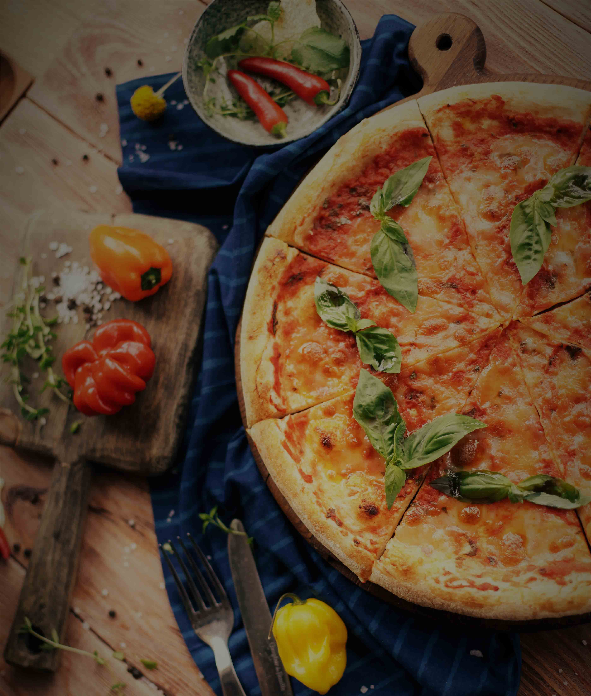

Un aperçu de notre Menu...

Entrées
- Bruschetta Rustico
- Carpaccio de bresaola au pesto
- Aubergines à la parmigiana
Plats
- Là Margarita
- Rigatoni pesto rosso aux tomates séchées
- L'Osso Buco
Desserts
- Torta caprese
- Semifreddo
Boissons
Les vins rouges
- l’Alberello 2008 - Fruité, corps plein et robuste
- Tense Sassella 2009 - Plein, lisse mais soutenu
Les vins blancs
- Casalj Cataratto 2011 - Ample, rond et souple
Les boissons fraîches
- Sodas et jus de fruits...
- Limonade Bio de Sicile
- Evian et San Pellegrino
La carte change tous les mois en fonction des arrivages et des saisons.